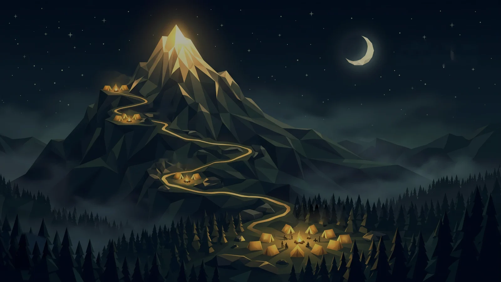

Estás aquí
MONTAÑAIDENTIDAD
MI MAPA
Expedición Mentalidad · Montaña Identidad
TerminadoTu posiciónAbiertoBloqueado
Demostración · sin progreso real
Progreso internoEl botón «Terminado» de cada día, simulado aquí. No cambia lo que se desbloquea.
Lo que vas a vivir

Estás aquí

Estás aquí
MENTALIDADExpedición 1 · activa